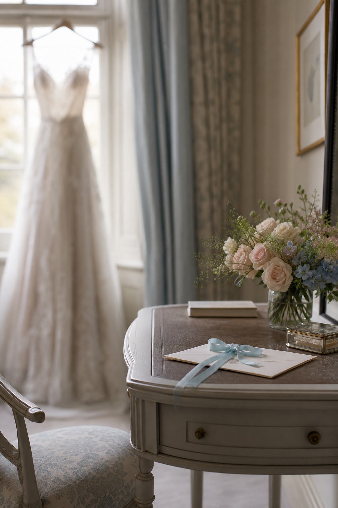
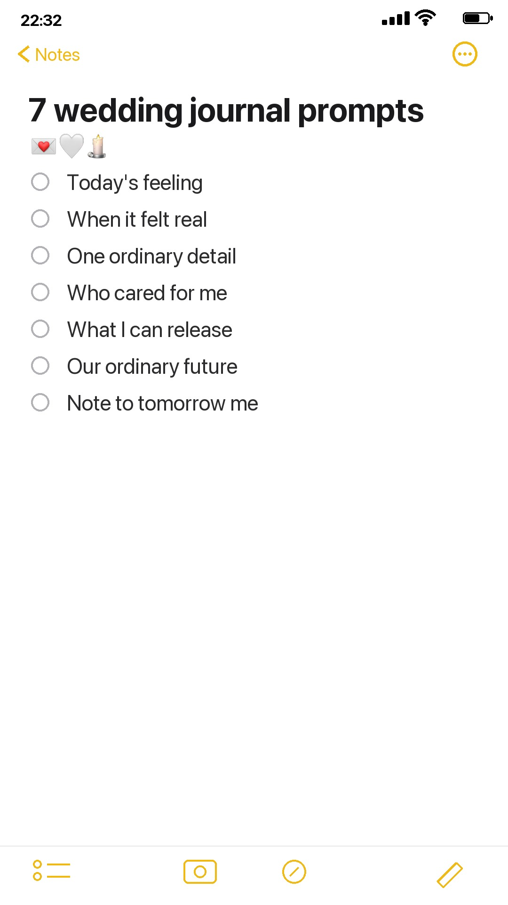

The week before a wedding can feel strangely fast and slow at the same time. There are messages to answer, small decisions still floating around, and familiar rooms beginning to feel like the setting for something important.

A wedding planner remembers appointments, payments, and seating changes. It may not remember the way your mother sounded on the phone, the song you kept playing in the kitchen, or the moment you suddenly thought, this is really happening. These prompts are for those softer details. Choose one each day and set a timer for two minutes if you are tired. A few honest lines are enough.

1. What does today feel like?
Begin with the atmosphere rather than the schedule. Is the day bright, restless, tender, noisy, expectant, or wonderfully ordinary? Notice the weather, the light, and what your body seems to be asking for. Mixed emotions belong here too.
2. What made the wedding feel real today?
Perhaps it was seeing your clothes ready, hearing someone call you “the bride,” or spotting both names together on a piece of paper. Record the small moment when the wedding stopped feeling like a distant plan. Add one sensory detail so the memory is easier to return to later.
3. What ordinary thing do you want to remember?
Write down the breakfast you ate, the shoes by the door, a half-finished cup of tea, the route you drove, or the joke that made everyone laugh when they were supposed to be helping. Nobody else may photograph these things. They are yours to notice.
4. Who made you feel cared for this week?
Name one person and one specific gesture. Maybe your partner quietly handled a difficult phone call, or a friend arrived with snacks. Write what they did and how it changed the day. You can share the words later, but you do not have to.
5. What are you ready to stop carrying?
The final week can collect other people’s opinions and the feeling that every detail must become a perfect memory. Finish this line: The wedding does not need to be _____ in order to be ours. Give one worry a sentence, then gently set it down.
6. What do you hope ordinary married life will feel like?
Look beyond the ceremony. Think about a quiet Tuesday, a shared meal, or coming home after a difficult day. Write about the qualities you hope to protect: kindness, humor, curiosity, steadiness, and room to change.
7. What would you like to tell tomorrow’s version of you?
On the evening before the wedding, write a short note to the person who will wake up tomorrow. Tell her what she does not need to fix. Remind her where to look when the room feels busy. Give her permission to pause.
Keep the ritual small
Use the notebook already beside your bed, a folded sheet of paper, or a few blank cards tied together afterward. Date each entry. Leave crossed-out words where they are. If you miss a day, continue with the next prompt. This is not another wedding task to complete correctly; it is a quiet place where the person inside the planning gets to remain visible.
Years from now, the handwriting may matter as much as the words. It will show how quickly you wrote, where you paused, and what you were carrying in the tender little week before everything changed.
For more gentle ways to hold ordinary moments, explore the Sentimentalica journal.